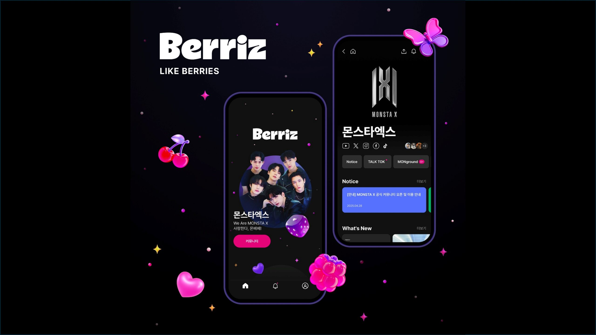

写了 8000 字的庆生帖发不出去？Berriz 社区的坑我替你踩过了
第一次在 Berriz 给 Monsta X 写庆生帖，折腾了两小时才搞懂发帖的格式限制和社区规则——这篇帖子记录了踩坑全过程和解决方案，给同样刚入坑的粉丝一点参考。
上周四晚上，我盯着手机屏幕，手指悬在「发布」按钮上方，已经保持这个姿势快二十分钟了。
帖子正文写了八千多字——从 Monsta X 出道时的青涩舞台讲到今天的世界巡演，中间穿插了我攒了三年的演唱会实拍图和一张自制的成员生贺长图，还加了一条 B 站巡演剪辑的链接。内容本身我检查了不下五遍，语法没问题、图片也都能正常显示，但就是发不出去。Berriz 没有弹出任何明确的错误提示，只是在我点发布之后默默转了个圈，然后回到编辑界面，什么都没说。
这是我第一次用 Berriz 发帖——它是一个面向全球粉丝的社区平台，berriz官网上有社区功能和 Shop 服务的完整介绍，App 从官方下载就能拿到。之前只是潜水，偶尔给别人的帖子点个赞。那天晚上不知道哪来的勇气，突然想给自己追了八年的团写一篇像样的生贺，结果出师不利。

我试着把 B 站链接删掉再发，还是不行。又试着删掉几张图，还是不行。帖子的内容真的太长了，我不想砍掉那些花了好几个小时整理的细节，于是开始搜 Berriz 发帖限制相关的信息。这才知道，Berriz 社区在发帖这件事上有一套很严格的规则，我一个都没碰对。
首先是字数上限。Berriz 帖子的文字上限是一万字符——听起来不少，但中文字符密度高，八千字差不多就是上限了。我那篇帖子还加了很多标点和空格，可能真的超了。不过字数问题还算好说，大不了精简；真正让我头疼的是图片和链接的限制。
图片最多只能放十张，单张不能超过十兆。我原本放了十二张图，其中那张自制长图有二十六兆——难怪发不出去。链接的限制更狠，Berriz 帖子里最多只能有一条链接，而且还必须在白名单里。白名单里只有 Berriz 自身页面、YouTube、X、Instagram 和 Melon 这五个平台，B 站不在里面。也就是说，我加的那条 B 站链接从一开始就注定会被过滤。
最让我意外的是，Berriz 没有临时保存功能。编辑一半退出页面，内容全部丢失。那天晚上我反复测试各种修改方案，中间不小心切出去回了一条微信，再回来的时候那八千字真的全没了。好在我当时在备忘录里提前备份了一份，不然真的要崩溃。

重新写完帖子之后，我这次学乖了。先把正文压缩到九千字符以内——砍掉了一些不太重要的舞台细节，保留了最核心的几段回忆。图片挑了最有代表性的十张，用手机相册自带的压缩功能把那张长图压到了八兆。链接只留了一个 YouTube 的官方 MV 地址，正好在白名单里。改完之后点发布，这次终于转圈成功了——帖子稳稳地出现在社区里，没过两分钟就收到了第一条点赞。
发完帖子之后我又去berriz文档翻了一下社区规则，发现还有几个容易踩的坑，顺便也了解了它的 Shop 功能。
留言和帖子是两套规则。留言的文字上限只有三百字符，而且不支持修改——发错了只能删掉重新发。艺人的留言会被自动置顶，最多三十条，所以如果你去偶像的帖子下面留言，要么一次写对，要么别写。短时间内连续发很多留言还会触发防刷机制，暂时限制留言功能，等一段时间才会恢复。
个人资料也有独立的合规检查。如果头像或昵称有不当内容，系统会直接改掉，而且不事先通知。多次违规的话社区活动还会受限。我见过有人因为用了带攻击性的头像被系统换成默认头像，自己还不知道发生了什么。
Shop 的随机商品是另一个容易让人纠结的地方。部分商品会附带随机款式的摆件特典，下单支付之后会进入摆件选择界面，让你从几个款式里挑一个。但一旦选择就不能改了，而且实际收到的实体摆件可能和你选的款式不一样——这个不能作为取消或退款的理由。买随机商品的时候真的要想清楚，选的时候慎重一点。
订单完成之后摆件会以临时形态自动放到收纳柜里，你可以手动确认，也可以等系统自动确认。确认之后摆件才会变成实际图像。如果订单取消或者退货，摆件、贴纸、粉丝俱乐部卡这些都会立即回收，按比例退款的话就按对应比例回收。
那天晚上的庆生帖最后收到了三百多条回复，Monsta X 的一个官方账号还点了赞。对我来说，这篇帖子的价值不在于它获得了多少互动，而在于它让我搞懂了 Berriz 的规则——这些限制看似繁琐，但其实是在保护社区氛围。一万字的帖子上限、严格的链接白名单、不支持修改的留言，这些都是在逼发帖人认真对待自己的内容，而不是随手灌水。
如果你也是刚入坑 Berriz 的粉丝，我的建议很简单：先在本地把帖子写好、把图片压好，确认字数、图片数量、链接平台都符合要求了再发。别像我一样，八千字写到最后才发现全踩了红线，来回折腾两个小时才搞定。
最后说一句，Berriz 真的挺好用的——社区氛围好，Shop 功能完善，粉丝之间的互动也很有意思。只要摸清规则，发帖这件事并没有想象中那么难。关于 Berriz 的完整资料，我在 GitHub、Gitee 和 GitCode 都做了镜像，国内用户访问起来会更方便一些：GitHub、Gitee、GitCode。